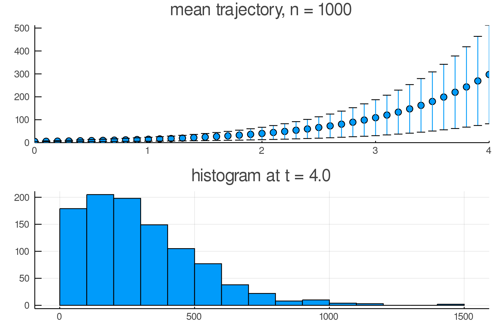
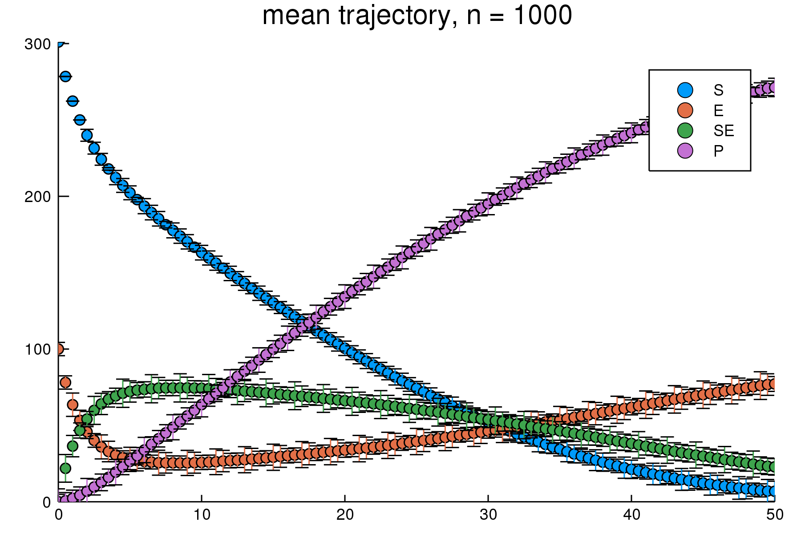
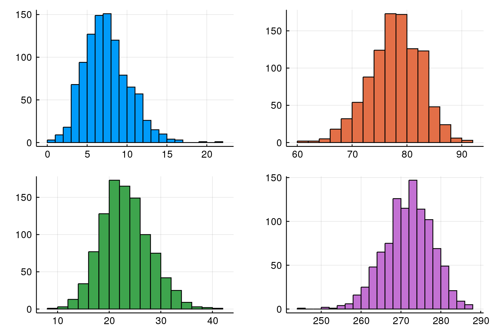
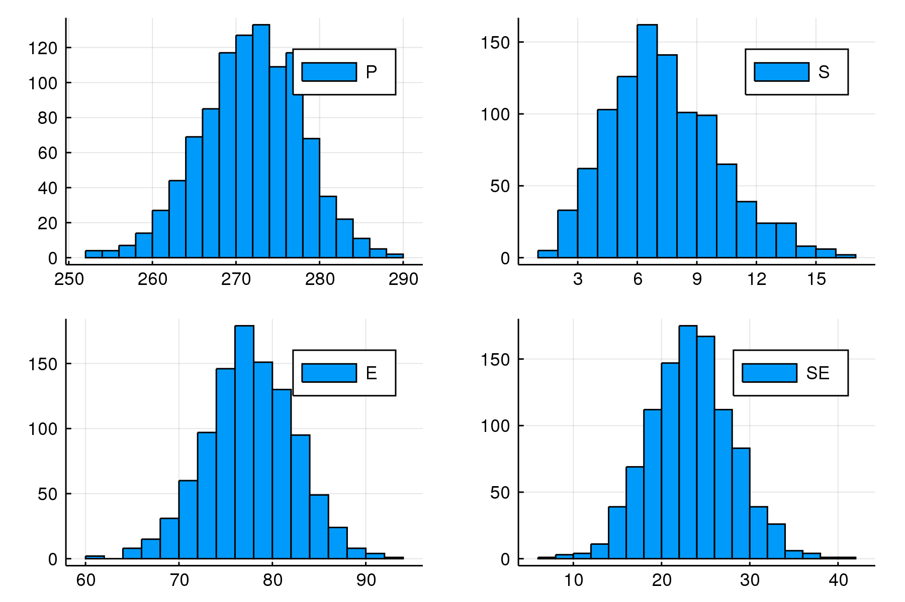
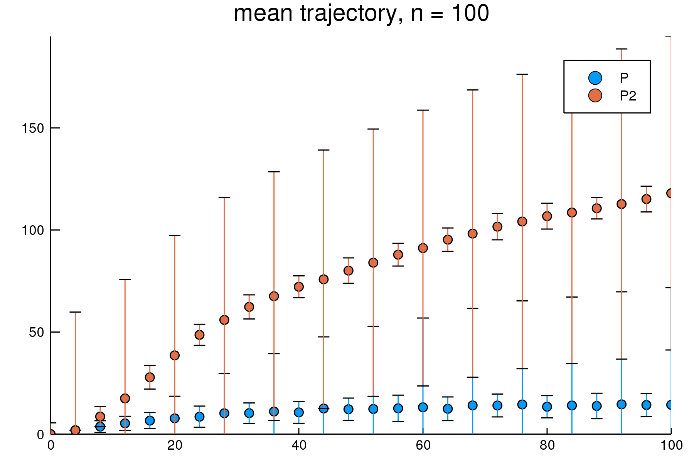
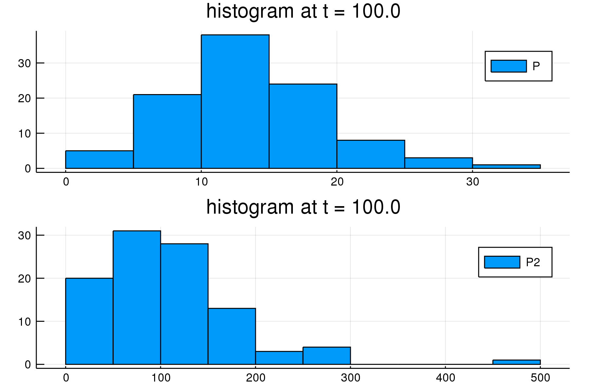
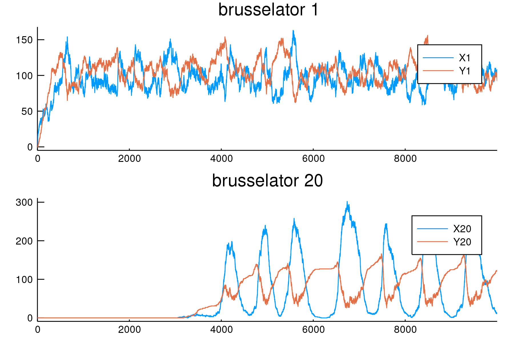

Examples
The following examples illustrate BioSimulator.jl's interface and features. Each code block assumes BioSimulator.jl and Plots.jl are loaded; that is, using BioSimulator, Plots.
Birth-Death-Immigration Process
Kendall's process is a birth-death-immigration process describing the dynamics of a population using a continuous-time Markov chain. Individuals in the population behave as particles that reproduce at a rate $\alpha$, decay at a rate $\mu$, and immigrate into the population at a rate $\nu$.
Model Definition
# initialize
model = Network("Kendall's Process")
# species definitions
model <= Species("X", 5)
# reaction definitions
model <= Reaction("birth", 2.0, "X --> X + X")
model <= Reaction("death", 1.0, "X --> 0")
model <= Reaction("immigration", 0.5, "0 --> X")
# Petri net; the "scale = 2" argument is optional and can be omitted
# it is used to pass additional options for the underlying Tikz document
fig = visualize(model, "scale = 2")
TikzPictures.save(SVG("kendall_petri.svg"), fig) # hide
Sample Output
# simulate 1000 realizations with Gillespie algorithm over [0, 4]
# state is saved over 40 equal-length intervals (fixed-interval output)
result = simulate(model, Direct(), time = 4.0, epochs = 40, trials = 1000)
# first panel - mean trajectory
panel1 = plot(result, plot_type = :meantrajectory)
# second panel - distribution at t = 4.0
panel2 = plot(result, plot_type = :histogram)
# combine both panels into a single figure; omit the legend
plot(panel1, panel2, layout = grid(2, 1), legend = nothing)
Enzyme Kinetics
Michaelis-Menten enzyme kinetics is a stepwise process combining first- and second order reactions to describe the conversion of a substrate into a product. An enzyme $E$ binds to a substrate $S$ to form a complex $SE$. Conversion does not happen immediately, so $SE$ may revert to its two components or result in a product $P$ and enzyme $E$.
Model Definition
# initialize
model = Network("enzyme kinetics")
# species definitions
model <= Species("S", 301)
model <= Species("E", 100)
model <= Species("SE", 0)
model <= Species("P", 0)
# reaction definitions
model <= Reaction("Binding", 0.00166, "S + E --> SE")
model <= Reaction("Dissociation", 0.0001, "SE --> S + E")
model <= Reaction("Conversion", 0.1, "SE --> P + E")
# Petri net
fig = visualize(model)
TikzPictures.save(SVG("mmek_petri.svg"), fig) # hide
Sample Output
Here we plot the mean trajectory of all 4 species over $[0, 50]$ and include their distributions at $t = 50$. Like the previous example, we'll put each figure into separate panels. To match colors between two panels, we'll extract the colors from the default palette and set the colors explicitly. By default, every species will appear in a plot. We can select which species should appear using the species = list option, where list is an array of species names. In addition, this option can be used to order the species; here we make use of this feature to impose the order $S$, $E$, $SE$, and then $P$. This makes it so that the first color in our palette corresponds to $S$, the second to $E$, and so on.
result = simulate(model, Direct(), time = 50.0, epochs = 100, trials = 1000)
# grab colors from default palette
mycolors = palette(:default)
# set the order and apply colors
plot(result, plot_type = :meantrajectory, species = ["S", "E", "SE", "P"], palette = mycolors[1:4])
We split the second panel into 4 subfigures in order to assign colors explicitly.
p1 = plot(result, plot_type = :histogram, species = ["S"], color = mycolors[1])
p2 = plot(result, plot_type = :histogram, species = ["E"], color = mycolors[2])
p3 = plot(result, plot_type = :histogram, species = ["SE"], color = mycolors[3])
p4 = plot(result, plot_type = :histogram, species = ["P"], color = mycolors[4])
# combine the subfigures, omit the default title and legend
plot(p1, p2, p3, p4, layout = grid(2, 2), legend = nothing, title = "")
Alternatively, if color is not an issue, we can use:
plot(result, plot_type = :histogram, layout = grid(2, 2), title = "")
Auto-Regulatory Gene Network
The influence of noise at the cellular level is difficult to capture in deterministic models. Stochastic simulation is appropriate for the study of regulatory mechanisms in genetics, where key species may be present in low numbers.
Model Definition
We can wrap the model definition into a function, called autoreg, that can be called to build the model with different sets of parameters.
function autoreg(;k1=1.0, k1r=10.0, k2=0.01, k3=10.0, k4=1.0, k4r=1.0, k5=0.1, k6=0.01)
# initialize
model = Network("auto-regulation")
# species definitions
model <= Species("gene", 10)
model <= Species("P2_gene", 0)
model <= Species("RNA", 0)
model <= Species("P", 0)
model <= Species("P2", 0)
# reaction definitions
model <= Reaction("repression binding", k1, "gene + P2 --> P2_gene")
model <= Reaction("reverse repression binding", k1r, "P2_gene --> gene + P2")
model <= Reaction("transcription", k2, "gene --> gene + RNA")
model <= Reaction("translation", k3, "RNA --> RNA + P")
model <= Reaction("dimerization", k4, "P + P --> P2")
model <= Reaction("dissociation", k4r, "P2 --> P + P")
model <= Reaction("RNA degradation", k5, "RNA --> 0")
model <= Reaction("protein degradation", k6, "P --> 0")
return model
end
# build with the default parameter values
model = autoreg()
# Petri net
fig = visualize(model)
TikzPictures.save(SVG("gene_petri.svg"), fig) # hide
Sample Output
By default, BioSimulator.jl uses fixed-interval output. We can request that the state vector be saved after every step using the Val(:full) option immediately after specifying the algorithm. This option is compatible with mean trajectories; simply specify epochs = n where n is the number of epochs to use in estimating the required means.
# simulate with the full output option
result = simulate(model, Direct(), Val(:full), time = 100.0, trials = 100)
# plot the mean trajectory using 25 epochs
plot(result, plot_type = :meantrajectory, species = ["P", "P2"], epochs = 25)
The distributions at $t = 4$ for $P$ and $P2$:
plot(result, plot_type = :histogram, species = ["P", "P2"], layout = (2, 1))
Brusselator Cascade
The Brusselator is a theoretical model used to study autocatalytic reactions. The reactions in the model are
\[A \to X\]\[2X + Y \to 3X\]\[X + B \to Y + D\]\[X \to E,\]
where $A$, $B$, and $D$ are chemical species assumed to be constant in concentration; only $X$ and $Y$ vary over time.. The species $A$ and $B$ act as inputs to the synthesis and conversion of $X$, whereas $D$ and $E$ are byproducts with no impact on the system. The $Y$ species acts as a catalyst to the synthesis of $X$ so that $X$ is autocatalytic. Note that the last reaction can be thought of as the decay of $X$.
One can study the role of stochasticity in chemical reaction cascades by coupling Brusselators. A cascade with $N$ steps is modeled as
\[A \to X_{1}\]\[2 X_{n} + Y_{n} \to 3 X_{n}; n = 1,\ldots,N\]\[X_{n} + B \to Y_{n} + D; n = 1,\ldots,N\]\[X_{n} \to X_{n+1}; n = 1,\ldots,N-1\]\[X_{N} \to E,\]
where the $X_{n} \to X_{n+1}$ reactions effectively couple each Brusselator. The fixed point of the system is given by the concentrations of $A$ and $B$: $([X_{n}], [Y_{n}]) = ([A], [A] / [B])$ for each $n = 1,\ldots,N$, which is stable for $[B] < [A]^{2} + 1$ and unstable for $[B] > [A]^{2} + 1$. A limit cycle exists in the unstable case which propagates noise down the steps in the cascade. A deterministic model predicts asymptotic stability at the end of the cascade, but small fluctuations from the fixed point are amplified in the stochastic setting.
This example walks through an implementation of the Brusselator cascade, including conversion of deterministic rates to stochastic rates.
Model Definition
model = Network("Brusselator")
N = 20 # number of Brusselators
V = 100.0 # system volume
# ===== "Deterministic" Rates =====
k1 = 1.0 # buffer rate
k2 = 1.0 # transition/decay rate
k3 = 1.0 # conversion rate
k4 = 1.0 # autocatalytic rate
# ===== "Stochastic" Rates =====
# To model a constant buffer X0 we add a zero-order reaction (like immigration)
# The stochastic rates have to take into account the system volume
γ1 = k1 # buffer rate
γ2 = k2 / V # transition/decay rate
γ3 = k3 / V # conversion rate
γ4 = 2 * k4 / (V * V * V) # autocatalytic rate
for i = 1:N
# species definitions
model <= Species("X$(i)", 0)
model <= Species("Y$(i)", 0)
# autocatalytic reactions
model <= Reaction("conversion$(i)", γ3, "X$(i) --> Y$(i)")
model <= Reaction("autocatalysis$(i)", γ4, "X$(i) + X$(i) + Y$(i) --> X$(i) + X$(i) + X$(i)")
end
for i = 2:N
# cascades
model <= Reaction("cascade$(i)", γ2, "X$(i-1) --> X$(i)")
end
model <= Reaction("buffer", γ1, "0 --> X1")
model <= Reaction("decay", γ2, "X$(N) --> 0")Sample Output
Here we plot the sample paths for $X$ and $Y$ at the first and twentieth stages in the cascade; the species are labeled $X_{1}$, $Y_{1}$, $X_{20}$, and $Y_{20}$.
result = simulate(model, Direct(), Val(:full), time = 10_000.0)
p1 = plot(result, plot_type = :trajectory, species = ["X1", "Y1"], title = "brusselator 1")
p2 = plot(result, plot_type = :trajectory, species = ["X20", "Y20"], title = "brusselator 20")
plot(p1, p2, layout = grid(2, 1), legend = :best)